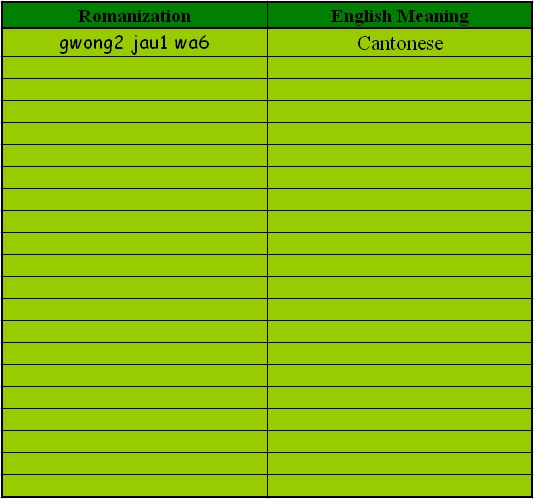

In this course, the following themes have been carefully chosen and developed to help beginning learners of Cantonese achieve basic competence in Cantonese.
Materials have been localized to the Hong Kong Institute of Education context so scenarios can be set and seen in an authentic way.
Unit 1: Course Introduction and Useful Tools and Resources
Unit 8: Shopping, Food and Drink
Unit 10: Useful Education Terms
Unit 13: Invitation and Social Skills

Introduction of Portfolio Learning and my vocabulary log
．Introduction to the Portfolio learning for this course and how to make use of your vocabulary log sheets to record new words that you have learnt.
References:
Ager, S. (2006). Omniglot writing system and languages of the world. Retrieved August 31, 2006, from http://www.omniglot.com/writing/cantonese.htm
Cantonese Learning Centre. (2006). What Cantonese is? Retrieved August 31, 2006, from http://www.clc.com.hk/material/sound.html
Matthews, S. & Yip, V. (2004). Cantonese: a comprehensive grammar. London: Routledge.
New Asia-Yale-in-China Chinese Language Centre. (1991). English-Cantonese Dictionary. Hong Kong: The Chinese University of Hong Kong.
Snow, D. (2004). Cantonese as Written Language: The Growth of a Written Chinese Vernacular. Hong Kong University Press.
ngo5 dik1 chi4 yu5 biu2 (My Vocabulary Log)
我的詞語表
